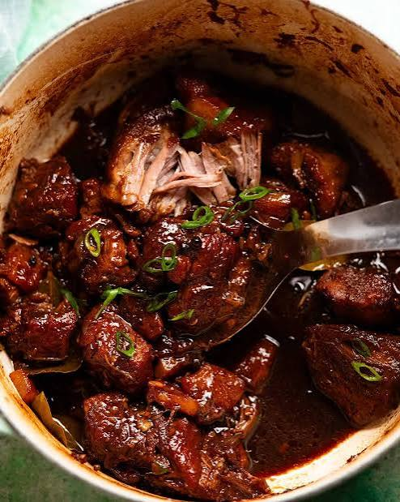

Chicken Adobo
Back to Home
Chicken Adobo

Pork in a tasty Adobo sauce is great smothered over white jasmine rice!
| Prep Time |
20 mins |
| Cook Time |
2 hrs 30 mins |
| Total Time |
2 hrs 50 mins |
| Yield |
6 servings |
| Servings |
6 |
Chicken Adobo Ingredients
- 1 cup distilled white vinegar
- 1 cup soy sauce
- ½ cup ketchup
- 1 tablespoon minced garlic
- 3 bay leaves
- 1 teaspoon fresh-ground black pepper
- 2 ½ pounds lean pork, cut into 1 inch cubes
- 1 pound small green beans, trimmed (Optional)
Directions
- STEP 1:Stir together the vinegar, soy sauce, ketchup, garlic, and bay leaves in a large saucepan. Add the cubed pork, and bring to a boil over high heat. Reduce heat to medium-low, cover, and simmer until the pork is tender, about 2 1/2 hours. Stir occasionally. If using the green beans, add them during the last half hour of cooking.
| Calories |
337 |
| Fat |
16g |
| Carbs |
14g |
| Protein |
35g |